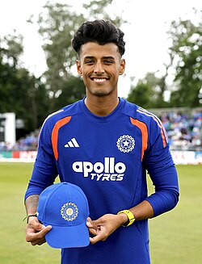

<h1>India Squad for World Cup 2027</h1>
<h2>1. Rohit Sharma</h2>

<h2>2. Shubman Gill</h2>

<h2>3. Virat Kohli</h2>

<h2>4. Shreyas Iyer</h2>

<h2>5. KL Rahul</h2>

<h2>6. Hardik Pandya</h2>

<h2>7. Suryansh Shedge</h2>

<h2>8. Axar Patel</h2>

<h2>9. Kuldeep Yadav</h2>

<h2>10. Jasprit Bumrah</h2>

<h2>11. Mohammed Siraj</h2>
